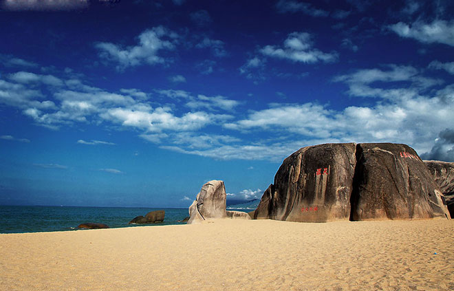

中文名称：三亚
外文名称：Sanya
下辖地区：吉阳区、崖州区、天涯区、海棠区
政府驻地：三亚市吉阳区新风街257号
城市名片：美丽三亚、浪漫天涯
邮政区码：572000
地理位置：海南岛南端[
面 积：1919.58平方公里

天涯海角

天涯海角游览区，位于三亚市区西南23公里处，陆地面积10.4平方公里，海域面积6平方公里，背负马岭山，面向茫茫大海，是海南建省20年第一旅游名胜。这里海水澄碧， 烟波浩瀚，帆影点点，椰林婆娑，奇石林立水天一色。海湾沙滩上大小百块石耸立，“天涯”、“海角”和“南天一柱”巨石突兀其间，昂首天外，峥嵘壮观。沙滩上大小百块磊石耸立，上有众多石刻。清康熙五十三年（1471年）钦差大臣苗曹汤巡边至此，勒石镌字“海判南天”，这是天涯海角最早的石刻。
“天涯海角”一词，早时是用来表达一种异乡的情结，经过千百年的积淀，承载了丰富深刻的文化内涵。清雍正年间崖州知州程哲在景区一海滨巨石上题刻了“天涯”二字，民国时期当地政要又在相邻的巨石上题写了“海角”二字，使这里成了名副其实的“天涯海角”。与“天涯”、“海角”石相隔不远处的“南天一柱”巨石，雄峙南海之滨，笑傲惊涛骇浪。翻到2元人民币背面，您会发现这精彩撼人的石景竟深入在中国人民生活的每一天中。
友情链接：三亚官网